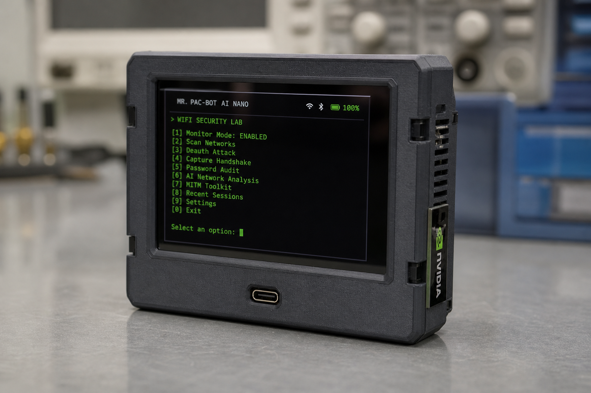
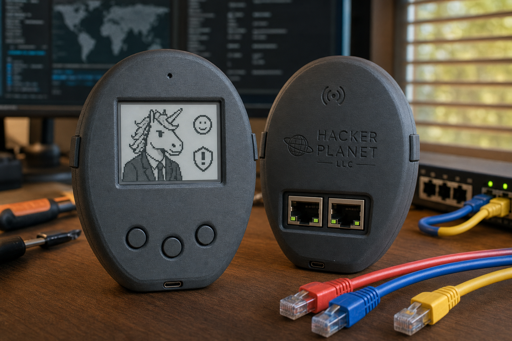

Blue Team retainers
UTM management, DDoS edge hardening, and CyberThreatGotchi IPS health - from $1,500/mo.
Hacker Planet LLC | Philadelphia, PA
Hacker Planet LLC is a Philadelphia cybersecurity practice - Blue Team retainers, authorized Red Team assessments, OSINT support, and an ethical hacking lab built from open-source edge tools and field hardware. We serve the Philly metro on-site and clients across the United States remotely, including teams relocating who need a boutique partner, not a ticket queue.
Local | Philadelphia metro
We are a service-area business based in Philadelphia, PA - city listed publicly, no walk-in retail address. Local clients get scope calls, on-site edge deployments when appropriate, and Philadelphia-assembled hardware shipped from our shop. Service area includes Philadelphia, Greater Philadelphia, the Delaware Valley, and Pennsylvania.
UTM management, DDoS edge hardening, and CyberThreatGotchi IPS health - from $1,500/mo.
Scoped penetration tests under signed rules of engagement - external, web/API, limited adversary sim.
Due diligence, vendor screening, and intelligence for matters you are authorized to investigate.
Remote | United States
Moving to Philadelphia or scaling a distributed team? We deliver the same retainers and scoped assessments remotely - video intake, shared runbooks, CTG Pro feed API keys, and hardware shipped to your lab VLAN. No enterprise bloat; boutique response times from Salvador Data and Pat in Philly.
Authorized lab only
When people search for computer hacking, we meet them with clarity: Hacker Planet LLC builds tools for authorized networks only - isolated lab VLANs, signed rules of engagement, and evidence auditors can trust. This is not opportunistic scanning or credential abuse.

Jetson bench lab for authorized Wi-Fi research, wordlists, and hashcat in your lab VLAN - $499.

Pocket lab profile for authorized Wi-Fi research - Philadelphia assembled from $89.99.

Defensive edge sensor with audit chain - pairs with lab VLAN offensive tooling under authorization.
All lab tooling requires networks and systems you own or have written permission to test.
Homelab | MSP
Homelab builders get e-ink status and SQLite audit trails they actually watch. MSPs get repeatable CTG installs, Pro feed API delivery, and documented playbooks in our CISO playbook ->. Browse the shop or read the ecosystem map.
Email salvadorData@proton.me - Salvador Data, Philadelphia PA. Phone (215) 839-8738. See Hacker Planet, about Hacker Planet LLC, and contact.
FAQ
Hacker Planet LLC (brand: Hacker Planet) is a Philadelphia cybersecurity practice specializing in Blue Team retainers, authorized Red Team assessments, and ethical hacking lab hardware - serving Philly metro and remote US clients.
No. Hacker Planet LLC is a service-area business based in Philadelphia, PA. We list the city publicly but do not publish a walk-in retail address. Hardware ships from our Philadelphia shop.
CyberThreatGotchi edge IPS, Mr. CrackBot AI Nano Jetson benches, CYD pocket lab builds, and M5 Cardputer field clients - all for networks and systems you own or have written permission to test.
Yes. Hacker Planet LLC provides remote cybersecurity consulting, MSP-ready edge installs, and Pro threat-feed delivery across the United States.